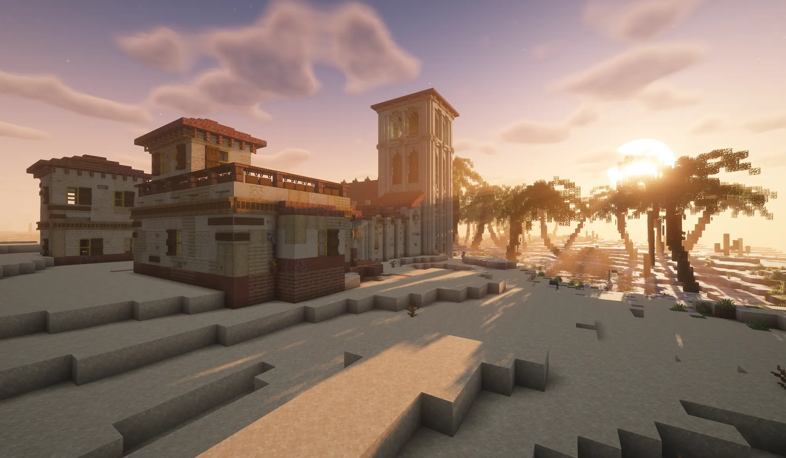
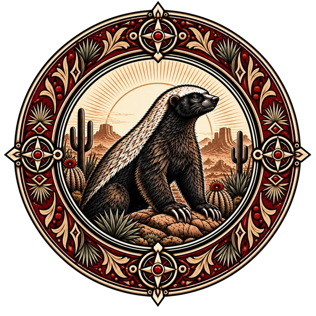

Het Eerste Licht
“Voor de dagen geteld werden, voor hemel, aarde en adem bestonden, was er het Licht. Niet geschapen en niet geboren. Het was.”
Boek van de Eerste Gloed, I


Theocratie van het Eerste Licht · RepublicMC
Voor ons was het Licht. In ons brandt het Licht. Na ons blijft het Licht.
Het Luminisme
Verathiel is een theocratisch kingdom op RepublicMC, in de wereld Quartum. Wij leven naar het Luminisme, het geloof dat de geleerde Elian in 315 N.A. opnieuw samenstelde uit de verspreide geschriften van het oude Aehisme. De wet van de staat is de wet van het Licht. Aan het hoofd staan de Pontifex en de Heilige Raad.
“Voor de dagen geteld werden, voor hemel, aarde en adem bestonden, was er het Licht. Niet geschapen en niet geboren. Het was.”
Boek van de Eerste Gloed, I
“In de mens brandt het als een vonk. Deze Lichtvonk behoort hem niet toe. Zij is slechts aan hem toevertrouwd zolang hij leeft.”
Boek van de Eerste Gloed, IV
“Men heeft de Schaduw te lang behandeld alsof zij een koning was. Maar zij bezit geen rijk. Waar het Licht ontbreekt, geven wij die afwezigheid slechts een naam.”
Kronieken van Elian, II
“De Zon is het Licht van handelen. De Maan is het Licht van inzicht. Daarom dient de wijze beiden te kennen.”
Boek van de Eerste Gloed, III
De Acht Geboden
Aelar trok door de wereld om te ontdekken waar het Eerste Licht werkelijk aanwezig was. Uit acht ontmoetingen kwamen de Acht Geboden voort, “niet als nieuwe waarheden, maar als woorden voor iets dat altijd reeds bestond.” Ontsteek een lamp om haar gebod te lezen.
Gebod I · Gelijkwaardigheid
Gij zult het Licht in uzelf zoeken en de vonk ervan in ieder ander erkennen; want alles wat leeft draagt iets van het Eerste Licht.
Uit Aelar’s Openbaringen
Een oude vrouw plant bomen waarvan zij zelf nooit de vruchten zal eten. Aelar begrijpt dat het Eerste Licht niet buiten de wereld te vinden is, maar erin.
lees het hele verhaalDe terugkeer van Aelar
Waar gij Licht vindt, versterk het.
Waar gij Licht draagt, deel het.
Waar gij Schaduw vindt, ontsteek een vlam.